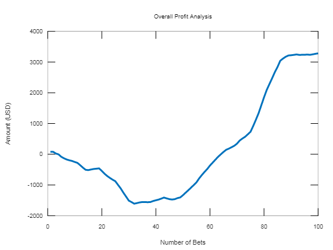
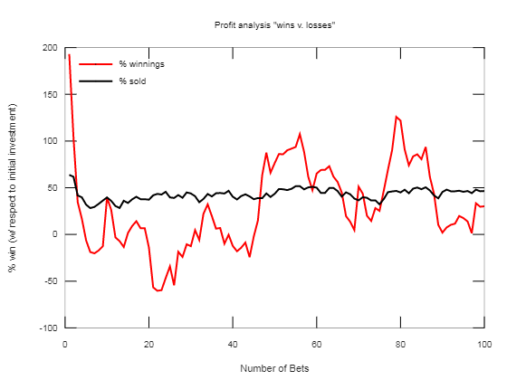
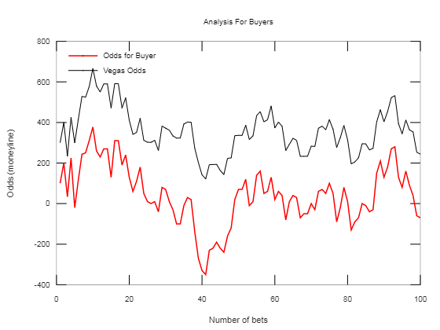

An elementary Profit Analysis of a potential Betting Platform in its primary stage of development.
This was a profit analysis created for a client, analyzing a prospective new type of gambling platform. The concept of this platform to create a place where sports bettors could buy sell their bets during live event. Individuals would be able to sell bets to either other sellers or to the site using an "automatic pay" feature. This analysis accounts for the variety of variables at play. It outputs multiple graphs showing the results for the run. It runs the simulation for n number of bets.
2019
Computational Analysis
clear all
close all
n=100;
ploss = zeros(1,n);
paymat = zeros(1,n);
costmat = zeros(1,n);
bamount = zeros(1,n);
swins = zeros(1,n);
odds22 = zeros(1,n);
odds11 = zeros(1,n);
result = zeros(1,n);
odds44 = zeros(1,n);
sperc = zeros(1,n);
percwin = zeros(1,n);
%setting empty smoothing functions
smoothodds22 = zeros(1,n);
smoothploss = zeros(1,n);
smoothpaymat = zeros(1,n);
smoothcostmat = zeros(1,n);
smoothbamount = zeros(1,n);
smoothswins = zeros(1,n);
smoothodds11 = zeros(1,n);
smoothresult = zeros(1,n);
smoothsperc = zeros(1,n);
smoothpercwin = zeros(1,n);
for z = 1:n
%values for determining nodds
a = randi(2);
if a == 1
b = -1;
else
b = 1;
end
d = randi(10);
e = randi(2);
if e == 1
f = -1;
else
f = 1;
end
g = randi(10);
%establishing the price of initial sale
%establishing values of necessary variables
bet=(100)*rand;
odds = b*d*100;
nodds = f*g*100;
saletype = 2;
% defining variable constants
r = 0.01;
%Changing odds from 100s values to computable decimal probabilities
if odds > 0
odds1 = odds/100;
else
odds1 = 100/(abs(odds));
end
if nodds > 0
odds2 = nodds/100;
else
odds2 = 100/(abs(nodds));
end
%calculating the potential win amount
pwin = bet+bet*odds1;
%finding the cost equation
%cost equation constants
%constant for 3rd party
k1=0.5;
%constant for guaranteed buy
k2 = 0.9;
%run loop
for i = 1:length(k2)
%if then statements determining k according to sale type
if saletype == 1
k = k1;
elseif saletype == 2
k=k2;
else
fprintf("ERROR: Invalid input for sale type")
end
cost = (bet*(1+odds1))/(k*(odds2+1));
%calculating what the buyer pays
buyerpays = cost*r+cost;
%calculating new odds for buyer
if cost <= pwin
odds3 = 100*pwin/buyerpays;
else
odds3 = buyerpays*100/pwin;
end
%output for part 1 (cost equation)
% if saletype == 1
% fprintf("seller gets: ")
% disp(cost);
% fprintf("Buyer pays: ")
% disp(buyerpays);
% fprintf("New odds for the buyer are: ")
% disp(odds3)
% end
%CALCULATING NET PROFIT FOR SITE
%setting variables for profit equations
sp1 = 25;
sp =(rand)*0.8;
kp = 1-sp;
h = randi(4);
if h == 1
br = 1;
else
br = 2;
end
%calculate selling statistics
sprice = 2*cost;
%odds for buyer on site
if sprice >= pwin
odds4 = -(sprice*100)/pwin;
else
odds4 = (pwin*100)/sprice;
end
if nodds >= odds4-200
odds4 = nodds+200;
if sprice>pwin
sprice = pwin*(nodds+100)/100;
else
sprice = (100*pwin)/(nodds+100);
end
else
odds4 = odds4;
end
%calculating profits
profit1 = r*cost;
profit2 = sp*sprice;
%assigning values for profit3 according to win v. lose
if br == 1
profit3 = kp*pwin;
elseif br == 2
profit3 = -kp*cost;
else
fprintf("ERROR: invalid entry for result of bet, please enter 1 or 2")
end
%calculating net profit
if saletype == 1
netprofit = profit1;
else
netprofit = profit2+profit3;
end
end
result(1,z)=netprofit;
paymat(1,z)=buyerpays;
costmat(1,z)=cost;
bamount(1,z)=bet;
swins(1,z)=pwin;
odds22(1,z)=nodds;
odds11(1,z)=odds1;
sperc(1,z)=sp*100;
odds44(1,z)=odds4;
ploss(1,z)=-bet;
percwin(1,z)=(netprofit/cost)*100;
c = zeros(1,n);
smoothc = zeros(1,n);
c(1,1) = result(1,1);
for j = 2:n
c(1,j) = result(1,j)+c(1,j-1);
end
end
%End Simulation
%--------------------------------------
%--------------------------------------
%--------------------------------------
%Smoothing functions
%smooth c
smoothc(1,1)=c(1,1);
smoothc(1,2)=(1/2)*(c(1,1)+c(1,2));
smoothc(1,3)=(1/3)*(c(1,1)+c(1,2)+c(1,3));
smoothc(1,4)=(1/4)*(c(1,1)+c(1,2)+c(1,3)+c(1,4));
smoothc(1,5)=(1/5)*(c(1,1)+c(1,2)+c(1,3)+c(1,4)+c(1,5));
smoothc(1,6)=(1/6)*(c(1,1)+c(1,2)+c(1,3)+c(1,4)+c(1,5)+c(1,6));
smoothc(1,7)=(1/7)*(c(1,1)+c(1,2)+c(1,3)+c(1,4)+c(1,5)+c(1,6)+c(1,7));
smoothc(1,8)=(1/8)*(c(1,1)+c(1,2)+c(1,3)+c(1,4)+c(1,5)+c(1,6)+c(1,7)+c(1,8));
smoothc(1,9)=(1/9)*(c(1,1)+c(1,2)+c(1,3)+c(1,4)+c(1,5)+c(1,6)+c(1,7)+c(1,8)+c(1,9));
smoothc(1,10)=(1/9)*(c(1,1)+c(1,2)+c(1,3)+c(1,4)+c(1,5)+c(1,6)+c(1,7)+c(1,8)+c(1,9)+c(1,10));
for j = 11:n
smoothc(1,j)=(1/10)*(c(1,j)+c(1,j-1)+c(1,j-2)+c(1,j-3)+c(1,j-4)+c(1,j-5)+c(1,j-6)+c(1,j-7)+c(1,j-8)+c(1,j-9)+c(1,j-10));
end
%smooth percwin
smoothpercwin(1,1)=percwin(1,1);
smoothpercwin(1,2)=(1/2)*(percwin(1,1)+percwin(1,2));
smoothpercwin(1,3)=(1/3)*(percwin(1,1)+percwin(1,2)+percwin(1,3));
smoothpercwin(1,4)=(1/4)*(percwin(1,1)+percwin(1,2)+percwin(1,3)+percwin(1,4));
smoothpercwin(1,5)=(1/5)*(percwin(1,1)+percwin(1,2)+percwin(1,3)+percwin(1,4)+percwin(1,5));
smoothpercwin(1,6)=(1/6)*(percwin(1,1)+percwin(1,2)+percwin(1,3)+percwin(1,4)+percwin(1,5)+percwin(1,6));
smoothpercwin(1,7)=(1/7)*(percwin(1,1)+percwin(1,2)+percwin(1,3)+percwin(1,4)+percwin(1,5)+percwin(1,6)+percwin(1,7));
smoothpercwin(1,8)=(1/8)*(percwin(1,1)+percwin(1,2)+percwin(1,3)+percwin(1,4)+percwin(1,5)+percwin(1,6)+percwin(1,7)+percwin(1,8));
smoothpercwin(1,9)=(1/9)*(percwin(1,1)+percwin(1,2)+percwin(1,3)+percwin(1,4)+percwin(1,5)+percwin(1,6)+percwin(1,7)+percwin(1,8)+percwin(1,9));
smoothpercwin(1,10)=(1/9)*(percwin(1,1)+percwin(1,2)+percwin(1,3)+percwin(1,4)+percwin(1,5)+percwin(1,6)+percwin(1,7)+percwin(1,8)+percwin(1,9)+percwin(1,10));
for j = 11:n
smoothpercwin(1,j)=(1/10)*(percwin(1,j)+percwin(1,j-1)+percwin(1,j-2)+percwin(1,j-3)+percwin(1,j-4)+percwin(1,j-5)+percwin(1,j-6)+percwin(1,j-7)+percwin(1,j-8)+percwin(1,j-9)+percwin(1,j-10));
end
%smooth sperc
smoothsperc(1,1)=sperc(1,1);
smoothsperc(1,2)=(1/2)*(sperc(1,1)+sperc(1,2));
smoothsperc(1,3)=(1/3)*(sperc(1,1)+sperc(1,2)+sperc(1,3));
smoothsperc(1,4)=(1/4)*(sperc(1,1)+sperc(1,2)+sperc(1,3)+sperc(1,4));
smoothsperc(1,5)=(1/5)*(sperc(1,1)+sperc(1,2)+sperc(1,3)+sperc(1,4)+sperc(1,5));
smoothsperc(1,6)=(1/6)*(sperc(1,1)+sperc(1,2)+sperc(1,3)+sperc(1,4)+sperc(1,5)+sperc(1,6));
smoothsperc(1,7)=(1/7)*(sperc(1,1)+sperc(1,2)+sperc(1,3)+sperc(1,4)+sperc(1,5)+sperc(1,6)+sperc(1,7));
smoothsperc(1,8)=(1/8)*(sperc(1,1)+sperc(1,2)+sperc(1,3)+sperc(1,4)+sperc(1,5)+sperc(1,6)+sperc(1,7)+sperc(1,8));
smoothsperc(1,9)=(1/9)*(sperc(1,1)+sperc(1,2)+sperc(1,3)+sperc(1,4)+sperc(1,5)+sperc(1,6)+sperc(1,7)+sperc(1,8)+sperc(1,9));
smoothsperc(1,10)=(1/9)*(sperc(1,1)+sperc(1,2)+sperc(1,3)+sperc(1,4)+sperc(1,5)+sperc(1,6)+sperc(1,7)+sperc(1,8)+sperc(1,9)+sperc(1,10));
for j = 11:n
smoothsperc(1,j)=(1/10)*(sperc(1,j)+sperc(1,j-1)+sperc(1,j-2)+sperc(1,j-3)+sperc(1,j-4)+sperc(1,j-5)+sperc(1,j-6)+sperc(1,j-7)+sperc(1,j-8)+sperc(1,j-9)+sperc(1,j-10));
end
%Smooth ploss
smoothploss(1,1)=ploss(1,1);
smoothploss(1,2)=(1/2)*(ploss(1,1)+ploss(1,2));
smoothploss(1,3)=(1/3)*(ploss(1,1)+ploss(1,2)+ploss(1,3));
smoothploss(1,4)=(1/4)*(ploss(1,1)+ploss(1,2)+ploss(1,3)+ploss(1,4));
smoothploss(1,5)=(1/5)*(ploss(1,1)+ploss(1,2)+ploss(1,3)+ploss(1,4)+ploss(1,5));
smoothploss(1,6)=(1/6)*(ploss(1,1)+ploss(1,2)+ploss(1,3)+ploss(1,4)+ploss(1,5)+ploss(1,6));
smoothploss(1,7)=(1/7)*(ploss(1,1)+ploss(1,2)+ploss(1,3)+ploss(1,4)+ploss(1,5)+ploss(1,6)+ploss(1,7));
smoothploss(1,8)=(1/8)*(ploss(1,1)+ploss(1,2)+ploss(1,3)+ploss(1,4)+ploss(1,5)+ploss(1,6)+ploss(1,7)+ploss(1,8));
smoothploss(1,9)=(1/9)*(ploss(1,1)+ploss(1,2)+ploss(1,3)+ploss(1,4)+ploss(1,5)+ploss(1,6)+ploss(1,7)+ploss(1,8)+ploss(1,9));
smoothploss(1,10)=(1/9)*(ploss(1,1)+ploss(1,2)+ploss(1,3)+ploss(1,4)+ploss(1,5)+ploss(1,6)+ploss(1,7)+ploss(1,8)+ploss(1,9)+ploss(1,10));
for j = 11:n
smoothploss(1,j)=(1/10)*(ploss(1,j)+ploss(1,j-1)+ploss(1,j-2)+ploss(1,j-3)+ploss(1,j-4)+ploss(1,j-5)+ploss(1,j-6)+ploss(1,j-7)+ploss(1,j-8)+ploss(1,j-9)+ploss(1,j-10));
end
%Smooth odds11
smoothodds11(1,1)=odds11(1,1);
smoothodds11(1,2)=(1/2)*(odds11(1,1)+odds11(1,2));
smoothodds11(1,3)=(1/3)*(odds11(1,1)+odds11(1,2)+odds11(1,3));
smoothodds11(1,4)=(1/4)*(odds11(1,1)+odds11(1,2)+odds11(1,3)+odds11(1,4));
smoothodds11(1,5)=(1/5)*(odds11(1,1)+odds11(1,2)+odds11(1,3)+odds11(1,4)+odds11(1,5));
smoothodds11(1,6)=(1/6)*(odds11(1,1)+odds11(1,2)+odds11(1,3)+odds11(1,4)+odds11(1,5)+odds11(1,6));
smoothodds11(1,7)=(1/7)*(odds11(1,1)+odds11(1,2)+odds11(1,3)+odds11(1,4)+odds11(1,5)+odds11(1,6)+odds11(1,7));
smoothodds11(1,8)=(1/8)*(odds11(1,1)+odds11(1,2)+odds11(1,3)+odds11(1,4)+odds11(1,5)+odds11(1,6)+odds11(1,7)+odds11(1,8));
smoothodds11(1,9)=(1/9)*(odds11(1,1)+odds11(1,2)+odds11(1,3)+odds11(1,4)+odds11(1,5)+odds11(1,6)+odds11(1,7)+odds11(1,8)+odds11(1,9));
smoothodds11(1,10)=(1/9)*(odds11(1,1)+odds11(1,2)+odds11(1,3)+odds11(1,4)+odds11(1,5)+odds11(1,6)+odds11(1,7)+odds11(1,8)+odds11(1,9)+odds11(1,10));
for j = 11:n
smoothodds11(1,j)=(1/10)*(odds11(1,j)+odds11(1,j-1)+odds11(1,j-2)+odds11(1,j-3)+odds11(1,j-4)+odds11(1,j-5)+odds11(1,j-6)+odds11(1,j-7)+odds11(1,j-8)+odds11(1,j-9)+odds11(1,j-10));
end
%smooth swins
smoothswins(1,1)=swins(1,1);
smoothswins(1,2)=(1/2)*(swins(1,1)+swins(1,2));
smoothswins(1,3)=(1/3)*(swins(1,1)+swins(1,2)+swins(1,3));
smoothswins(1,4)=(1/4)*(swins(1,1)+swins(1,2)+swins(1,3)+swins(1,4));
smoothswins(1,5)=(1/5)*(swins(1,1)+swins(1,2)+swins(1,3)+swins(1,4)+swins(1,5));
smoothswins(1,6)=(1/6)*(swins(1,1)+swins(1,2)+swins(1,3)+swins(1,4)+swins(1,5)+swins(1,6));
smoothswins(1,7)=(1/7)*(swins(1,1)+swins(1,2)+swins(1,3)+swins(1,4)+swins(1,5)+swins(1,6)+swins(1,7));
smoothswins(1,8)=(1/8)*(swins(1,1)+swins(1,2)+swins(1,3)+swins(1,4)+swins(1,5)+swins(1,6)+swins(1,7)+swins(1,8));
smoothswins(1,9)=(1/9)*(swins(1,1)+swins(1,2)+swins(1,3)+swins(1,4)+swins(1,5)+swins(1,6)+swins(1,7)+swins(1,8)+swins(1,9));
smoothswins(1,10)=(1/9)*(swins(1,1)+swins(1,2)+swins(1,3)+swins(1,4)+swins(1,5)+swins(1,6)+swins(1,7)+swins(1,8)+swins(1,9)+swins(1,10));
for j = 11:n
smoothswins(1,j)=(1/10)*(swins(1,j)+swins(1,j-1)+swins(1,j-2)+swins(1,j-3)+swins(1,j-4)+swins(1,j-5)+swins(1,j-6)+swins(1,j-7)+swins(1,j-8)+swins(1,j-9)+swins(1,j-10));
end
%Smooth bamount
smoothbamount(1,1)=bamount(1,1);
smoothbamount(1,2)=(1/2)*(bamount(1,1)+bamount(1,2));
smoothbamount(1,3)=(1/3)*(bamount(1,1)+bamount(1,2)+bamount(1,3));
smoothbamount(1,4)=(1/4)*(bamount(1,1)+bamount(1,2)+bamount(1,3)+bamount(1,4));
smoothbamount(1,5)=(1/5)*(bamount(1,1)+bamount(1,2)+bamount(1,3)+bamount(1,4)+bamount(1,5));
smoothbamount(1,6)=(1/6)*(bamount(1,1)+bamount(1,2)+bamount(1,3)+bamount(1,4)+bamount(1,5)+bamount(1,6));
smoothbamount(1,7)=(1/7)*(bamount(1,1)+bamount(1,2)+bamount(1,3)+bamount(1,4)+bamount(1,5)+bamount(1,6)+bamount(1,7));
smoothbamount(1,8)=(1/8)*(bamount(1,1)+bamount(1,2)+bamount(1,3)+bamount(1,4)+bamount(1,5)+bamount(1,6)+bamount(1,7)+bamount(1,8));
smoothbamount(1,9)=(1/9)*(bamount(1,1)+bamount(1,2)+bamount(1,3)+bamount(1,4)+bamount(1,5)+bamount(1,6)+bamount(1,7)+bamount(1,8)+bamount(1,9));
smoothbamount(1,10)=(1/9)*(bamount(1,1)+bamount(1,2)+bamount(1,3)+bamount(1,4)+bamount(1,5)+bamount(1,6)+bamount(1,7)+bamount(1,8)+bamount(1,9)+bamount(1,10));
for j = 11:n
smoothbamount(1,j)=(1/10)*(bamount(1,j)+bamount(1,j-1)+bamount(1,j-2)+bamount(1,j-3)+bamount(1,j-4)+bamount(1,j-5)+bamount(1,j-6)+bamount(1,j-7)+bamount(1,j-8)+bamount(1,j-9)+bamount(1,j-10));
end
%Smooth costmat
smoothcostmat(1,1)=costmat(1,1);
smoothcostmat(1,2)=(1/2)*(costmat(1,1)+costmat(1,2));
smoothcostmat(1,3)=(1/3)*(costmat(1,1)+costmat(1,2)+costmat(1,3));
smoothcostmat(1,4)=(1/4)*(costmat(1,1)+costmat(1,2)+costmat(1,3)+costmat(1,4));
smoothcostmat(1,5)=(1/5)*(costmat(1,1)+costmat(1,2)+costmat(1,3)+costmat(1,4)+costmat(1,5));
smoothcostmat(1,6)=(1/6)*(costmat(1,1)+costmat(1,2)+costmat(1,3)+costmat(1,4)+costmat(1,5)+costmat(1,6));
smoothcostmat(1,7)=(1/7)*(costmat(1,1)+costmat(1,2)+costmat(1,3)+costmat(1,4)+costmat(1,5)+costmat(1,6)+costmat(1,7));
smoothcostmat(1,8)=(1/8)*(costmat(1,1)+costmat(1,2)+costmat(1,3)+costmat(1,4)+costmat(1,5)+costmat(1,6)+costmat(1,7)+costmat(1,8));
smoothcostmat(1,9)=(1/9)*(costmat(1,1)+costmat(1,2)+costmat(1,3)+costmat(1,4)+costmat(1,5)+costmat(1,6)+costmat(1,7)+costmat(1,8)+costmat(1,9));
smoothcostmat(1,10)=(1/9)*(costmat(1,1)+costmat(1,2)+costmat(1,3)+costmat(1,4)+costmat(1,5)+costmat(1,6)+costmat(1,7)+costmat(1,8)+costmat(1,9)+costmat(1,10));
for j = 11:n
smoothcostmat(1,j)=(1/10)*(costmat(1,j)+costmat(1,j-1)+costmat(1,j-2)+costmat(1,j-3)+costmat(1,j-4)+costmat(1,j-5)+costmat(1,j-6)+costmat(1,j-7)+costmat(1,j-8)+costmat(1,j-9)+costmat(1,j-10));
end
%Smooth Result
smoothresult(1,1)=result(1,1);
smoothresult(1,2)=(1/2)*(result(1,1)+result(1,2));
smoothresult(1,3)=(1/3)*(result(1,1)+result(1,2)+result(1,3));
smoothresult(1,4)=(1/4)*(result(1,1)+result(1,2)+result(1,3)+result(1,4));
smoothresult(1,5)=(1/5)*(result(1,1)+result(1,2)+result(1,3)+result(1,4)+result(1,5));
smoothresult(1,6)=(1/6)*(result(1,1)+result(1,2)+result(1,3)+result(1,4)+result(1,5)+result(1,6));
smoothresult(1,7)=(1/7)*(result(1,1)+result(1,2)+result(1,3)+result(1,4)+result(1,5)+result(1,6)+result(1,7));
smoothresult(1,8)=(1/8)*(result(1,1)+result(1,2)+result(1,3)+result(1,4)+result(1,5)+result(1,6)+result(1,7)+result(1,8));
smoothresult(1,9)=(1/9)*(result(1,1)+result(1,2)+result(1,3)+result(1,4)+result(1,5)+result(1,6)+result(1,7)+result(1,8)+result(1,9));
smoothresult(1,10)=(1/9)*(result(1,1)+result(1,2)+result(1,3)+result(1,4)+result(1,5)+result(1,6)+result(1,7)+result(1,8)+result(1,9)+result(1,10));
for j = 11:n
smoothresult(1,j)=(1/10)*(result(1,j)+result(1,j-1)+result(1,j-2)+result(1,j-3)+result(1,j-4)+result(1,j-5)+result(1,j-6)+result(1,j-7)+result(1,j-8)+result(1,j-9)+result(1,j-10));
end
%smooth paymat
smoothpaymat(1,1)=paymat(1,1);
smoothpaymat(1,2)=(1/2)*(paymat(1,1)+paymat(1,2));
smoothpaymat(1,3)=(1/3)*(paymat(1,1)+paymat(1,2)+paymat(1,3));
smoothpaymat(1,4)=(1/4)*(paymat(1,1)+paymat(1,2)+paymat(1,3)+paymat(1,4));
smoothpaymat(1,5)=(1/5)*(paymat(1,1)+paymat(1,2)+paymat(1,3)+paymat(1,4)+paymat(1,5));
smoothpaymat(1,6)=(1/6)*(paymat(1,1)+paymat(1,2)+paymat(1,3)+paymat(1,4)+paymat(1,5)+paymat(1,6));
smoothpaymat(1,7)=(1/7)*(paymat(1,1)+paymat(1,2)+paymat(1,3)+paymat(1,4)+paymat(1,5)+paymat(1,6)+paymat(1,7));
smoothpaymat(1,8)=(1/8)*(paymat(1,1)+paymat(1,2)+paymat(1,3)+paymat(1,4)+paymat(1,5)+paymat(1,6)+paymat(1,7)+paymat(1,8));
smoothpaymat(1,9)=(1/9)*(paymat(1,1)+paymat(1,2)+paymat(1,3)+paymat(1,4)+paymat(1,5)+paymat(1,6)+paymat(1,7)+paymat(1,8)+paymat(1,9));
smoothpaymat(1,10)=(1/9)*(paymat(1,1)+paymat(1,2)+paymat(1,3)+paymat(1,4)+paymat(1,5)+paymat(1,6)+paymat(1,7)+paymat(1,8)+paymat(1,9)+paymat(1,10));
for j = 11:n
smoothpaymat(1,j)=(1/10)*(paymat(1,j)+paymat(1,j-1)+paymat(1,j-2)+paymat(1,j-3)+paymat(1,j-4)+paymat(1,j-5)+paymat(1,j-6)+paymat(1,j-7)+paymat(1,j-8)+paymat(1,j-9)+paymat(1,j-10));
end
%Smooth Odds22
smoothodds22(1,1)=odds22(1,1);
smoothodds22(1,2)=(1/2)*(odds22(1,1)+odds22(1,2));
smoothodds22(1,3)=(1/3)*(odds22(1,1)+odds22(1,2)+odds22(1,3));
smoothodds22(1,4)=(1/4)*(odds22(1,1)+odds22(1,2)+odds22(1,3)+odds22(1,4));
smoothodds22(1,5)=(1/5)*(odds22(1,1)+odds22(1,2)+odds22(1,3)+odds22(1,4)+odds22(1,5));
smoothodds22(1,6)=(1/6)*(odds22(1,1)+odds22(1,2)+odds22(1,3)+odds22(1,4)+odds22(1,5)+odds22(1,6));
smoothodds22(1,7)=(1/7)*(odds22(1,1)+odds22(1,2)+odds22(1,3)+odds22(1,4)+odds22(1,5)+odds22(1,6)+odds22(1,7));
smoothodds22(1,8)=(1/8)*(odds22(1,1)+odds22(1,2)+odds22(1,3)+odds22(1,4)+odds22(1,5)+odds22(1,6)+odds22(1,7)+odds22(1,8));
smoothodds22(1,9)=(1/9)*(odds22(1,1)+odds22(1,2)+odds22(1,3)+odds22(1,4)+odds22(1,5)+odds22(1,6)+odds22(1,7)+odds22(1,8)+odds22(1,9));
smoothodds22(1,10)=(1/9)*(odds22(1,1)+odds22(1,2)+odds22(1,3)+odds22(1,4)+odds22(1,5)+odds22(1,6)+odds22(1,7)+odds22(1,8)+odds22(1,9)+odds22(1,10));
for j = 11:n
smoothodds22(1,j)=(1/10)*(odds22(1,j)+odds22(1,j-1)+odds22(1,j-2)+odds22(1,j-3)+odds22(1,j-4)+odds22(1,j-5)+odds22(1,j-6)+odds22(1,j-7)+odds22(1,j-8)+odds22(1,j-9)+odds22(1,j-10));
end
%Smooth odds44
smoothodds44(1,1)=odds44(1,1);
smoothodds44(1,2)=(1/2)*(odds44(1,1)+odds44(1,2));
smoothodds44(1,3)=(1/3)*(odds44(1,1)+odds44(1,2)+odds44(1,3));
smoothodds44(1,4)=(1/4)*(odds44(1,1)+odds44(1,2)+odds44(1,3)+odds44(1,4));
smoothodds44(1,5)=(1/5)*(odds44(1,1)+odds44(1,2)+odds44(1,3)+odds44(1,4)+odds44(1,5));
smoothodds44(1,6)=(1/6)*(odds44(1,1)+odds44(1,2)+odds44(1,3)+odds44(1,4)+odds44(1,5)+odds44(1,6));
smoothodds44(1,7)=(1/7)*(odds44(1,1)+odds44(1,2)+odds44(1,3)+odds44(1,4)+odds44(1,5)+odds44(1,6)+odds44(1,7));
smoothodds44(1,8)=(1/8)*(odds44(1,1)+odds44(1,2)+odds44(1,3)+odds44(1,4)+odds44(1,5)+odds44(1,6)+odds44(1,7)+odds44(1,8));
smoothodds44(1,9)=(1/9)*(odds44(1,1)+odds44(1,2)+odds44(1,3)+odds44(1,4)+odds44(1,5)+odds44(1,6)+odds44(1,7)+odds44(1,8)+odds44(1,9));
smoothodds44(1,10)=(1/9)*(odds44(1,1)+odds44(1,2)+odds44(1,3)+odds44(1,4)+odds44(1,5)+odds44(1,6)+odds44(1,7)+odds44(1,8)+odds44(1,9)+odds44(1,10));
for j = 11:n
smoothodds44(1,j)=(1/10)*(odds44(1,j)+odds44(1,j-1)+odds44(1,j-2)+odds44(1,j-3)+odds44(1,j-4)+odds44(1,j-5)+odds44(1,j-6)+odds44(1,j-7)+odds44(1,j-8)+odds44(1,j-9)+odds44(1,j-10));
end
%smooth ploss
smoothploss(1,1)=ploss(1,1);
smoothploss(1,2)=(1/2)*(ploss(1,1)+ploss(1,2));
smoothploss(1,3)=(1/3)*(ploss(1,1)+ploss(1,2)+ploss(1,3));
smoothploss(1,4)=(1/4)*(ploss(1,1)+ploss(1,2)+ploss(1,3)+ploss(1,4));
smoothploss(1,5)=(1/5)*(ploss(1,1)+ploss(1,2)+ploss(1,3)+ploss(1,4)+ploss(1,5));
smoothploss(1,6)=(1/6)*(ploss(1,1)+ploss(1,2)+ploss(1,3)+ploss(1,4)+ploss(1,5)+ploss(1,6));
smoothploss(1,7)=(1/7)*(ploss(1,1)+ploss(1,2)+ploss(1,3)+ploss(1,4)+ploss(1,5)+ploss(1,6)+ploss(1,7));
smoothploss(1,8)=(1/8)*(ploss(1,1)+ploss(1,2)+ploss(1,3)+ploss(1,4)+ploss(1,5)+ploss(1,6)+ploss(1,7)+ploss(1,8));
smoothploss(1,9)=(1/9)*(ploss(1,1)+ploss(1,2)+ploss(1,3)+ploss(1,4)+ploss(1,5)+ploss(1,6)+ploss(1,7)+ploss(1,8)+ploss(1,9));
smoothploss(1,10)=(1/9)*(ploss(1,1)+ploss(1,2)+ploss(1,3)+ploss(1,4)+ploss(1,5)+ploss(1,6)+ploss(1,7)+ploss(1,8)+ploss(1,9)+ploss(1,10));
for j = 11:n
smoothploss(1,j)=(1/10)*(ploss(1,j)+ploss(1,j-1)+ploss(1,j-2)+ploss(1,j-3)+ploss(1,j-4)+ploss(1,j-5)+ploss(1,j-6)+ploss(1,j-7)+ploss(1,j-8)+ploss(1,j-9)+ploss(1,j-10));
end
%End Smoothing Functions
%--------------------------------------
%--------------------------------------
%--------------------------------------
%Begin Plots
xaxis=[1:n];
figure;plot(smoothc, 'Linewidth', 3);
title('Overall Profit Analysis'), xlabel('Number of Bets'), ylabel('Amount (USD)')
figure;plot(smoothpercwin,'r','LineWidth', 2);
title('Profit analysis "wins v. losses"'), xlabel('Number of Bets'), ylabel('% win (w/ respect to initial investment)')
hold on; plot(smoothsperc, 'k','LineWidth', 2); hold off
legend({'% winnings','% sold'},'Location','northwest');
legend('boxoff')
figure;plot(smoothbamount,'c','LineWidth', 0.75);
title('Analysis For Sellers'), xlabel('Number of Bets'), ylabel('Amount (USD)')
hold on; plot(smoothswins, 'r','LineWidth', 0.75); hold off
hold on; plot(smoothploss,'k','LineWidth', 0.75); hold off
hold on; plot(smoothcostmat,'b','LineWidth', 0.75); hold off
legend({'Initial Bet amount','potential win','potential loss','Selling Price'},'Location','northwest');
legend('boxoff')
sz=5;
figure;plot(smoothodds22,'r','LineWidth',1.5)
title('Analysis For Buyers'), xlabel('Number of bets'), ylabel('Odds (moneyline)')
hold on; plot(smoothodds44,'k','LineWidth',1); hold off
w = mean(odds22);
t = mean(odds44);
legend({'Odds for Buyer','Vegas Odds'},'Location','northwest');
legend('boxoff')
Output for this simulation includes four distinct graphs: 1. Analyzing the Overall profit for the company, 2. Analyzing the percentage win for each bet kept (unable to be sold) by the company, alongside percentage sold, 3. Analyzing the model for individual bettors wishing to sell their bets (why people would use the site to sell), and 4. Analyzing the site for individual buyers purchasing bets on the site (why people would want to purchase bets). Each graph is produced using a moving average to "smooth" the data. To run this code for yourself, select the "run code" tab. Each graph is analyzing a single specific run of the simulation.
  This code is a simulation, and will therefore produce varying results for each run. On line 3, the n variable is set to 100. This sets the number of bets the simulation uses. You can adjust this however you please, but keep in mind that a higher n value means more time per run. To get rid of the smoothing functions and view the raw data set, you can comment out that portion of code.
You can run this code in Online MATLAB environment, Octave.net, created by GitHub user sffc.